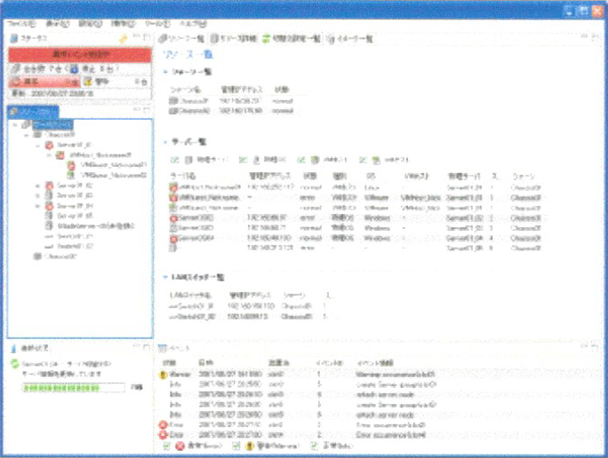
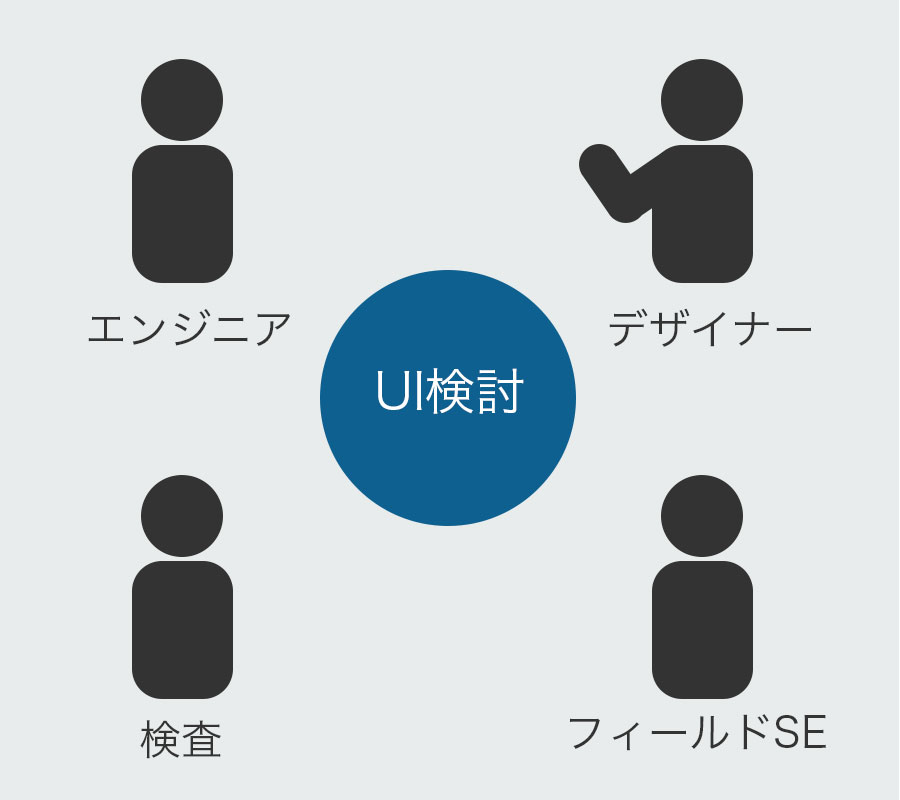
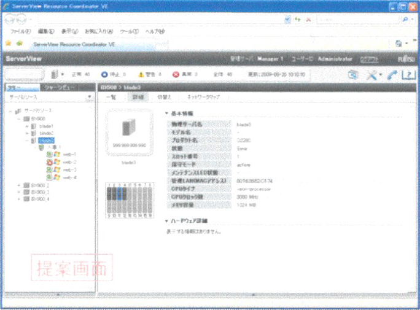
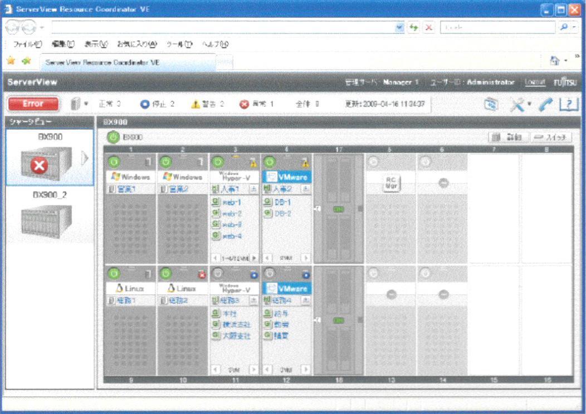
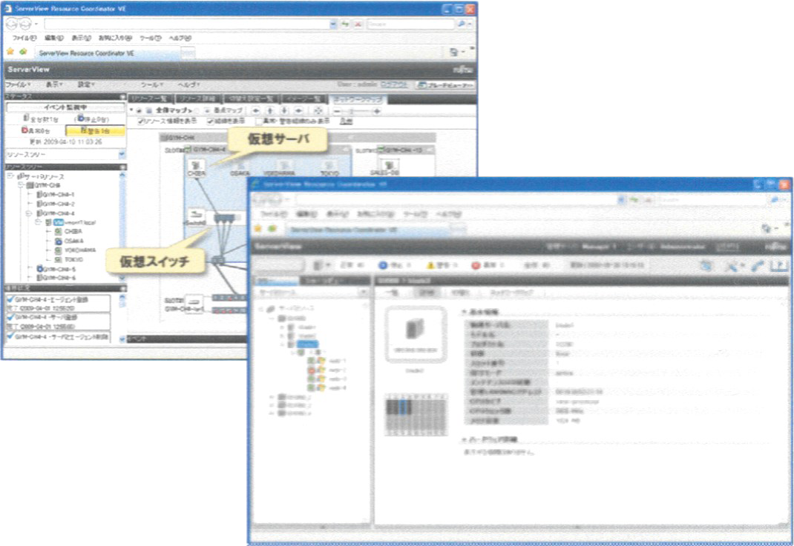
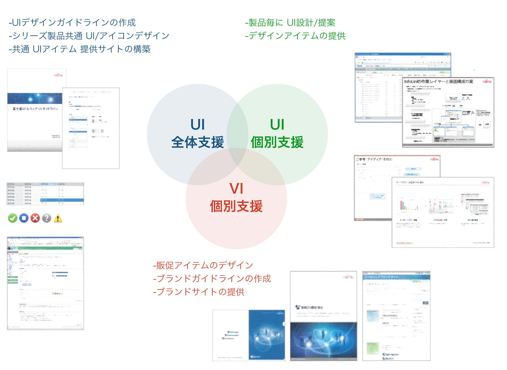

Ver13
2006年10月〜2007年09月
UI改善
Ver13.2
2007年10月〜2008年09月
UI改善
VE
2008年10月〜2009年09月
現場調査/インタビュー, UI設計
Ver13
アイコンの作成依頼きっかけで、UI改善提案を実施。
サーバーの全体の状態をひと目で把握できる表現を採用され実現しました。

Ver13.2
前Verの提案内容が評価され、UI改善依頼がきました。
初めて上流工程からUI検討を実施。
ユーザーと利用シーンをエンジニアと徹底検討し、テキストや表ベースだったUIを視覚的に注目させる情報を表現し、増えているというサーバー監視初心者ユーザーでも状態を把握できるようなUI表現に変更しました。


VE
前Verの提案内容が評価され、再びUI改善依頼がきました。
サーバー状況の視覚化が好評だったことと、WindowsアプリケーションからWebベースへとプラットフォームが変更になることから、UIを大幅変更することに。
フィールドSE、エンジニアと共にサーバー監視の現場に行き業務の進め方を観察。その時得られた知見をもとに、新しいUIを実現。サーバーの見た目を模したイメージを画面いっぱいに表現し、サーバーの場所に行かなくても最低限の操作と状態把握を可能にするUIを提案しました。
従来のUIと新しいUIをモード切り替えすることにより両方使用することを可能にし、従来のプロフェッショナルユーザーと、新たな一般PC操作ユーザーの両方が使えるサービスを実現しました。
VEは2009年度GoodDesign賞受賞しました


私の主な担当は、
【UI全体支援】UIデザインガイドライン作成（Windowsアプリ / WEB）、UIパーツ作成
【UI個別支援】UI設計/提案
でした。
この時、ガイドラインとUIパーツ作成に携わったことにより、UIコンポーネント指向が身につき、後のUI設計や実装に影響したと実感しています。
所属デザインチームの活動範囲
